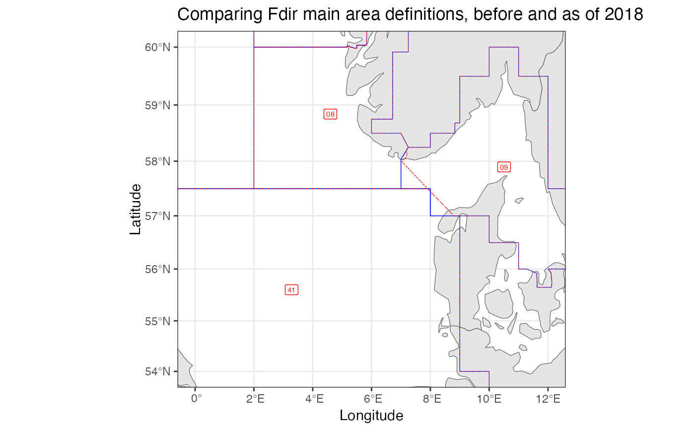

Plots two area defintions on top of each other for comparison
Usage
plotAreaComparison(
areaDef1,
areaDef2,
areaNameCol1 = "StratumName",
areaNameCol2 = areaNameCol1,
areaLabels1 = F,
areaLabels2 = F,
xlim = NULL,
ylim = NULL,
areaLabelSize = 2,
title = "",
projection = NULL,
polygonColor1 = "blue",
polygonColor2 = "red",
linetype1 = "solid",
linetype2 = "dotdash"
)Arguments
- areaDef1
A
sfdata.frame. The area definition to be plotted first ("behind" the other one)- areaDef2
A
sfdata.frame. The area definition to be plotted second ("on top of" the other one)- areaNameCol1
The column in areaDef1 that provides the names to be used for any labeling of areas
- areaNameCol2
The column in areaDef2 that provides the names to be used for any labeling of areas
- areaLabels1
logical, specifying whether labels should be plotted for areaDef1. These are plotted first ("behind" any labels plotted for areaDef2)
- areaLabels2
logical, specifying whether labels should be plotted for areaDef2. These are second ("on top of" any labels plotted for areaDef1)
- xlim
x axis limits in degrees longitude
- ylim
y axis limits in degrees latitudeD
- areaLabelSize
size for any area labels
- title
plot title
- projection
proj4string or EPSG code specifying the desired projection, see
st_crs. Defaults to mercator projection.- polygonColor1
color to be used for plotting the areaDef1 polygons.
- polygonColor2
color to be used for plotting the areaDef2 polygons.
- linetype1
the linetype used for plotting the areaDef1 polygons.
- linetype2
the linetype used for plotting the areaDef2 polygons.
Details
Map ranges to plot are specified by 'xlim' and 'ylim'. These should always be given in lon/lat. if these are not given they will be derived from the bounding box of 'areaDef'. To allow for flexible projection, some space will be added around 'xlim' and 'ylim'.
Colors can be specified as understood by ggplot2. E.g. one of those listed by colors.
Linetypes can be specified as understood by ggplot2. E.g: "solid", "dashed", "dotted", "dotdash", "longdash", or "twodash".
Examples
#illustratting the difference between to similar area coding systems:
plotAreaComparison(RstoxFDA::mainareaFdir2017,
RstoxFDA::mainareaFdir2018,
xlim=c(0,12),
ylim=c(54,60),
areaLabels2 = TRUE,
title="Comparing Fdir main area definitions, before and as of 2018")
